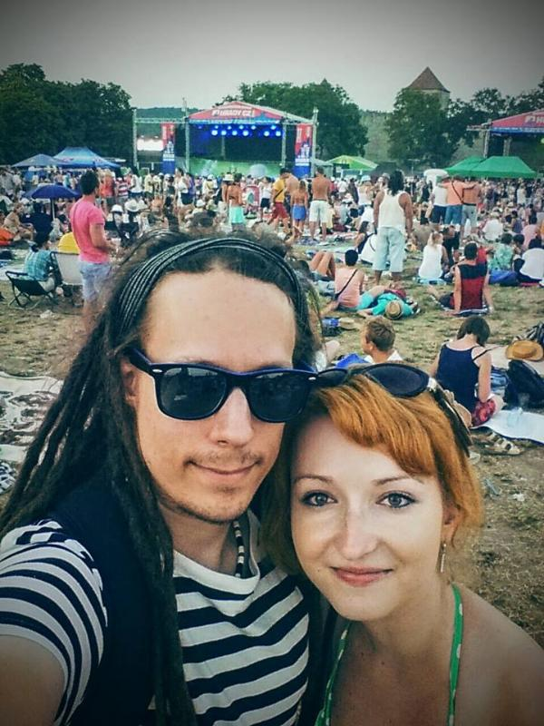
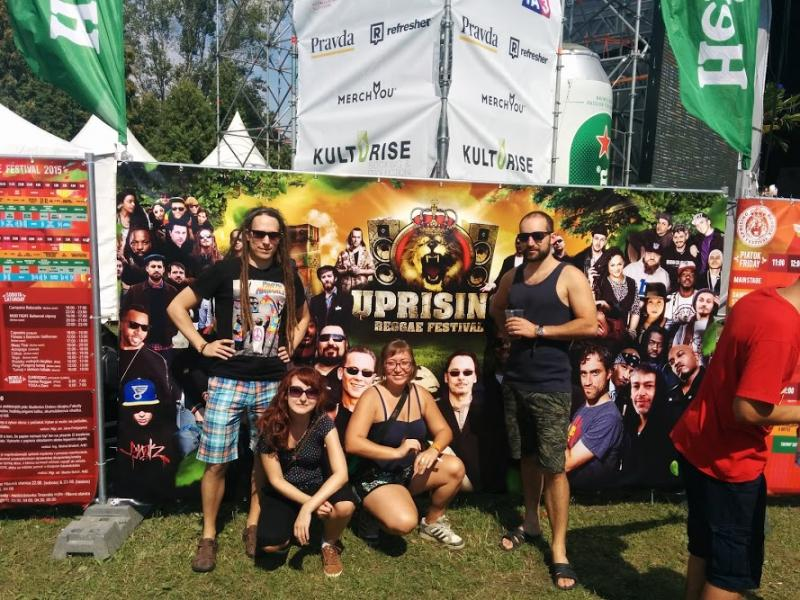

Původně jsem tento příspěvek chtěla věnovat festivalu České Hrady, na které jsme letos po několika letech opět zavítali. Ale než jsem ho stačila dokončit, vyjeli jsme na další festival, bratislavský Uprising. A tak jsem se rozhodla oba zážitky spojit do jednoho článku.
Na Českých Hradech se letos krom několika festivalových stálic typu Skyline nebo Sto zvířat objevila i celá řada interpretů, které jsem dosud naživo neviděla. První mou koncertní premiérou byli Čechomoři. V době jejich vysoupení se po areálu začalo trousit docela povážlivé množství lidí, kteří dorazili na večerní “hvězdné” koncerty. Horko vrcholilo (Hrady se letos na Veveří konaly o druhém srpnovém víkendu, na který meteorologové předpovídali padání teplotních rekordů), takže mi zpočátku koncert přišel trošičku chcíplý, ale možná to bylo i tím, že Čechomoři moc nekomunikovali s publikem. Navíc se na všechny lidovky pařit nedá :D. Ale postupně se to rozjelo, lidi začali zpívat a když zahráli moji nejmilejší, Hrušku, propadla jsem té atmosféře taky :-).
Po Čechomorech vystoupila Anna K., kterou jsem zatím naživo taky nezažila. Ze všech interpretů na Hradech působila nejsympatičtěji a i přes počáteční technické problémy to byl super koncert. Já jsem teda dost mainstreamový posluchač, takže se mi zavděčila spíš svými rádiovými hity. A nijak se za to nestydím :D.

Letní pohodička na Veveří
Koncert kapely Chinaski by se dal nejlépe charakterizovat slovy “davové šílenství”. Doteďka jsem si asi nikdy pořádně neuvědomila, jak jsou Chinaski u nás populární. Dostat se do kotle bylo naprosto nereálné, ale uvízli jsme na celkem fajnovém místě někde veprostřed, odkud byl dobrý výhled na kapelu a atmosféra více než hustá :D. To nadšení davu mě úplně strhlo. První půlka koncertu byly spíš věci z nejnovějšího alba - některé jsem měla naposlouchané a ten zbytek mi přišel taky dost dobrý. A pak už přišly starší pecky. Ale těch opravdu archivních mi tam dost chybělo. Zazněly jen Drobná paralela, Stejně jako já… a Punčocháče :D. Závěrečný přídavek Víno mi přišel v kontextu vystoupení u nás na Moravě trochu podbízivý, ale možná by mě ve výsledku zklamalo, kdyby to nezahráli, takže asi nakonec cajk 8-).
Naprostým vrcholem Hradů ale pro mě bylo závěrečné vystoupení kapely Wanastowi Vjecy. Zažít na vlastní oči a uši legendu Roberta Kodyma byl prostě jedinečný zážitek a i kdybych viděla z celých Hradů jen jeho koncert, stálo by to za to! Dneska už Wanastovky vlastně ani neposlouchám, ale i tak jsem skoro všechny songy znala a celý koncert prozpívala. Andělé, Vlkodlak, Nahá… všechny ty starý pecky, který se hrály v Esu, když jsem byla ještě malá. A Sbírka zvadlejch růží, která dodneška dostává fanynky do kolen. Jestli jsem si na něco šetřila hlasivky celej den, tak to bylo přesně na ten moment, kdy Robert Kodym spustil " Netvař se tak na mě že jsi úplně zlá…".
To bratislavský reggae festival Uprising byl celý jedna velká koncertní premiéra. Že tam letos prostě musíme mi došlo někdy v květnu, když jsem cestou na Zvonařku zahlídla obrovský plakát a na něm 2 jména: Anthony B a Matysiahu. Kdo tam bude hrát dál už nám bylo vlastně celkem fuk :).

Naše festivalová parta :)
Naši koncertní plavbu zahájil svým koncertem Jah Sun, jedna z největších reggae hvězd Kalifornie a za mě určitě jeden z nejlepších koncertů na Uprisingu. Hudební objev léta :-)!
Hlavním lákadlem festivalu a nejspíš také největší vystupující reggae legendou byl Bunny Wailer, jeden ze zakládajících členů kapely The Wailers, se kterými hrál Bob Marley! Vzhledem k tomu, že Bunnymu už táhne skoro na sedmdesát, byli jsme na jeho koncert dost zvědaví a docela nás překvapilo, jak to na pódiu ještě rozbalil :D!
 Na festivale byla hojně zastoupena také česká a slovenská reggae a dancehall scéna. Kromě roztančeného koncertu slovenských Medial Banana jsme si nejvíc užili vystoupení Mr. Rolla, který patří k našim oblíbencům už od časů Žízníkova. Bohužel k nám na Moravu na koncerty moc nejezdí :(. Byli jsme tedy rádi, že si na něho můžeme zapařit alespoň tady. Jen škoda, že vynechal pár našich oblíbených letních hitů, které by se podle mě k atmosféře festivalu skvěle hodily.
Na festivale byla hojně zastoupena také česká a slovenská reggae a dancehall scéna. Kromě roztančeného koncertu slovenských Medial Banana jsme si nejvíc užili vystoupení Mr. Rolla, který patří k našim oblíbencům už od časů Žízníkova. Bohužel k nám na Moravu na koncerty moc nejezdí :(. Byli jsme tedy rádi, že si na něho můžeme zapařit alespoň tady. Jen škoda, že vynechal pár našich oblíbených letních hitů, které by se podle mě k atmosféře festivalu skvěle hodily.
A teď už k tomu, na co jsme se těšili úplně nejvííííc! Hvězda z Jamajky, Anthony B,rozhodně nezklamal - jeho vystoupení bylo skvělé, nabité energií a zaznělo všechno, na co jsem se těšila. Nejvíc fascinující bylo ale to, jak si totálně snadno podmanil publikum. Po téhle, ale i po všech ostatních stránkách jednoduše nepřekonatelné vystoupení.

Oproti tomu, ač to nerada přiznávám, pro mě byl koncert Matysiahu docela zklamáním. Těšila jsem se na podobně nabitou show, silný hity, kterých má v repertoáru celou řadu… místo toho nás čekalo poněkud pesimisticky laděné komorní vystoupení. Teprve později jsem se dozvěděla, že moje očekávání byla trochu mimo a většina koncetů Matysiahu se nese právě v tomto duchu. Trošku jsem roztála, až když zazněla One Day, ale i tak jsem se nemohla zbavit pocitu, že bych šla na Matysiahu příště raději někam do klubu. Na festival se mi tohle prostě nějak nehodilo.

Celý festival uzavíralo vystoupení UB40. Proč to nepřiznat - že se název této doposud tajemnem obestřené kapely “úbé čtyřicet” rovná už o mnoho povědomější britské kapele “júbí forty” mi došlo asi až hodinu před jejich koncertem. Bylo to vskutku šokující prozření :D! O to víc jsem se na ně těšila. Jednalo se o nejdelší vystoupení festivalu, trvající neuvěřitelné dvě hodiny. Ty nejlepší hity si staroušci samozřejmě šetřili až na úplný konec, což nás dost znervóznilo. Byli jednou z mála kapel festivalu, která se vrátila na přídavek. A teprve v tu chvíli konečně vystřihli " Red red wine" a taky tu pecku od Elvise a dav měl zase proč šílet :-D. Dokonalá festivalová tečka.
No, co dodat závěrem? Letošní hudební léto prohlašuji za více než vydařené - tolik úžasných a rozmanitých koncertů jsem ani nečekala! Na obou festivalech jsme měli výbornou společnost, počasí nám přálo a ani po organizační stránce nebylo moc co vytknout. Tak snad zase někdy někde v kotli na viděnou :-)!